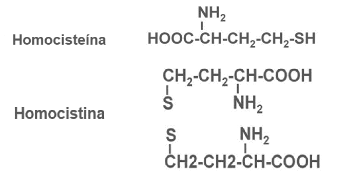

Homocisturia clásica trastorno hereditario del metabolismo de la metionina que resulta en la acumulación de homocisteína en la sangre y en su excreción en la orina
Acumulación de homociteína en la sangreNomenglatura
Nomenglatura
Homocisteína y homocistina
 Diagrama
Terminología para homocisteína en plasma humano normal
La homocistína y sus derivados: una terminología consensada sugerida
La síntesis de la homocisteína
MAT Metionina adenosiltransferasa, SAHH S-adenosilhomcisteína hidrolasa, SAM S-adenosilmetionina, SAH S-adenosilhomocisteína
Homocistinuria es la segunda causa de aminoacidopatías, después de fenilcetonuria. Se hereda en forma autosómica recesiva. El defecto está en el cromosoma 21 q 22.3. Incidencia: 1:300 000 a 1:60 000. Es un trastorno del metabolismo de la metionina con aumento de homocisteína, y alteraciones en ojos y sistemas nervioso central, cardiovascular y esquelético.
Trastorno hereditario del metabolismo de la metionina que resulta en la acumulación de homocisteína en la sangre y en su excreción en la orina.
Niveles de Homocisteina. Metabolismo de la Homocisteina.Sintomas clinicos
Las características clínicas más llamativas de la homocistinuria son la ectopia del cristalino, la osteoporosis, la presencia de fenómenos tromboembólicos y el retraso psicomotor.
Los pacientes homocigotos se caracterizan por hiperhomocisteninemia grave de hasta 500 pmol/l, con homocistinuria y varias manifestaciones clínicas, entre las que destaca la afectación cardiovascular. Los pacientes heterocigotos, portadores, desarrollan una hiperhomocisteinemia moderada con una expresividad clínica intermedia.
Casos Clinicos
Caso 1: Varón de 26 años en seguimiento por la Unidad de Nutrición desde los 19 años de edad por homocistinuria. A los 6 años de edad presentó un glaucoma agudo bilateral secundario a luxación del cristalino. Dicho cuadro clínico, junto con la presencia de hábito marfanoide, llevó a la sospecha de homocistinuria, confirmada tras el estudio metabólico pertinente, que clasificó el cuadro como homocistinuria tipo I (déficit de cistationina β sintetasa), la forma más frecuente de homocistinuria. El estudio de la afectación familiar detectó el estado de portador en ambos progenitores y un hermano afecto (ver caso 2). Otros problemas presentados en el contexto de la enfermedad incluyen trombosis del seno venoso longitudinal a los 7 años, neumotórax espontáneo a los 15 años y hábito marfanoide. Desde el momento del diagnóstico seguía tratamiento con vitamina B6, ácido fólico, L-cistina y dieta con restricción de proteínas (20-40 gramos diarios). La ausencia de respuesta a vitamina B6 motivó la adición de betaína. En el momento actual ha finalizado sus estudios universitarios con éxito, no realiza actividad física programada, no presenta sintomatología en la anamnesis por aparatos y su estado de ánimo es normal. Reconoce no seguir ningúna restricción dietética a pesar de que se le ha explicado la importancia de la misma para reducir el riesgo de complicaciones. En la exploración física destaca hábito marfanoide, peso 73,1, talla 1,77, IMC 23,3, TA 105/69. Realiza tratamiento con 900 mg diarios de vitamina B6, 5 gramos diarios de cistina, 5 mg diarios de ácido fólico y betaína (6 gramos diarios). Durante su seguimiento en las Consultas de Nutrición ha presentado parámetros antropométricos (peso, IMC, pliegue tricipital, circunferencia muscular del brazo) y analíticos nutricionales (linfocitos, proteínas, albúmina, prealbúmina, colesterol) dentro de la normalidad. Sin embargo los niveles de homocisteína total en plasma han oscilado entre 353,9 y 135 μmol/l (rango 5-15 μmol/l) según el contenido proteico de la dieta. La metionina se ha mantenido en valores inferiores a 600 μmol/l (10-40 μmol/l). Además, realiza seguimiento activo por el Servicio de Oftalmología.
Caso 2: Varón de 20 años de edad diagnosticado de homocistinuria tipo I en la infancia en seguimiento en la Unidad de Nutrición desde los 13 años. Se estableció el diagnóstico con un mes de vida tras la confirmación de la enfermedad en su hermano. Entre los problemas asociados a este error congénito del metabolismo de la metionina sólo presenta miopía magna y una escoliosis severa que ha precisado medidas ortopédicas. No tiene otros antecedentes personales reseñables. Hasta los 12 años realizó seguimiento en otro centro hospitalario y según consta en los informes el desarrollo ponderoestatural y psicomotor fueron normales. Recibió tratamiento con restricción dietética 20-40 gramos diarios con escaso cumplimiento asociado a vitamina B6, ácido fólico y cistina.
El tratamiento con betaína se comenzó cuando el paciente tenía 11 años de edad observándose importante mejoría de los niveles de homocisteína en plasma y en orina (374 μmol/l y 1131 μmol/l g de creatinina versus 104 y 515). En nuestra Unidad el paciente ha seguido tratamiento con vitamina B6 (900 mg/d), ácido fólico (5 mg/d), L-cistina (5 gramos/día) y betaína. Al igual que su hermano, el caso 2 presenta baja adherencia a la restricción proteica de la dieta, lo cual justifica sus niveles elevados de homocisteína plasmática (374 y 98 μmol/l). Desde hace 2 años su análisis nutricional revela un déficit de vitaminas A y E que ha respondido adecuadamente a la suplementación.
En los dos pacientes se realizan visitas anuales en las que se los interroga clínicamente sobre síntomas neurológicos, osteomusculares y de otras posibles complicaciones, y se les pregunta sobre posibles incidencias médicas y personales de relevancia. Se efectúan medidas antropométricas y exploración física básica. Con frecuencia anual se solicita analítica con bioquímica, iones, coagulación, vitaminas B12, fólico, D, A, E, prealbúmina, zinc, magnesio, homocisteína en plasma, en orina y metionina plasmática y pruebas de función tiroidea.
En los dos pacientes se ha realizado densitometría con frecuencia bianual, que ha indicado la presencia de una osteopenia estable, y ecocardiogramas periódicos, con un resultado normal.
En ambos casos destaca una baja adherencia a la dieta pautada con restricción proteica. Dicha baja adherencia ha persistido aunque se les han explicado las consecuencias negativas de la misma sobre el pronóstico de la enfermedad, se ha realizado una adecuada educación dietética por el personal de la Unidad de Nutrición y se le han facilitado diferentes recetas culinarias para facilitar un mayor cumplimiento dietético.